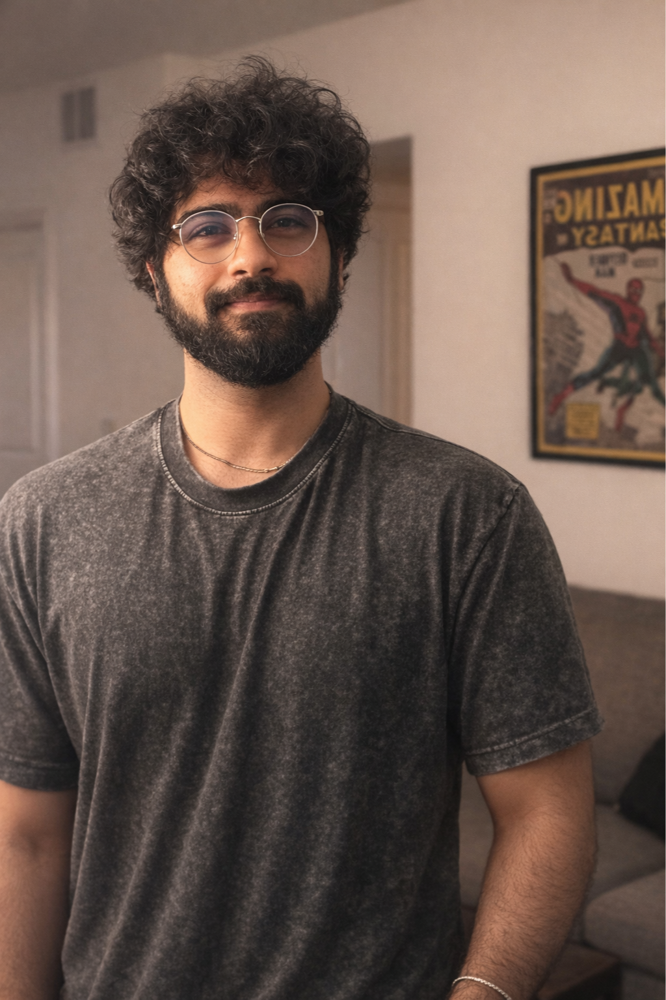

Designing content systems that scale clarity, build trust, and empower users to act with confidence.
Currently at Intuit, I lead content design for professional tax products used by thousands of accountants nationwide. I build the systems behind the content—AI-powered help infrastructure, automated publishing pipelines, and scalable content patterns—so the right answer reaches the right user at the right moment. Previously, I designed UX content for enterprise B2B platforms at CGI Inc.
I'm a UX Content Designer who thinks in systems. My background blends technical communication, content strategy, and increasingly, AI-assisted tooling. I got into this field because I believe the words inside a product are as much a part of the design as the interface itself — and when you get them right at scale, everything downstream improves: fewer support calls, fewer errors, more confident users.
Outside of work, I'm usually dialing in an espresso recipe, experimenting in the kitchen, or trying to stay upright on a mountain bike trail at Erwin Park. I like building things — whether it's a content system, a sourdough loaf, or this website. The throughline is the same: understand the inputs, refine the process, and make something that works better than the last version.
Intuit · ProTax Group
Oct 2023 – Present
Leading content design for regulated professional tax products. Built AI-powered content systems, automated publishing pipelines, and scalable help infrastructure serving thousands of professional accountants.
CGI Inc. · AT&T Business
Jun 2021 – Jun 2023
Designed UX content for complex enterprise B2B platforms. Translated dense technical and contractual requirements into clear, actionable interface language for multi-location telecom service management.
Eisenberg Inc.
Mar 2021 – Jun 2021
Managed concurrent creative projects end-to-end, coordinating between clients, designers, and vendors.
For the full picture:
From managers and teammates I've worked closely with.
"Nischal's quality of work is 15/10. Easily my favorite content designer to work with. Sometimes I've even asked for his opinion on content for a project that he's not on because I prefer his style of writing. We could work on things for hours without a problem, get in a groove, and just crank out ideas. He is open and willing to have discussions if there are conflicting ideas. I trusted him 100%"
"I had the pleasure of working with Nischal for a brief period of time, but it was more than enough to recognize his immense talent and versatility as a writer. His support and strong work ethic made him an extremely valued member of our team. He consistently impressed me with his innovation and the breadth of knowledge he brought to the table."
"Almost as soon as Nischal was added to my team, I was struck by how quickly he was able to get up to speed. He is a self-starter who doesn't wait around to be told what to do. I so appreciated his calm demeanor and performance in stressful situations. He is, quite simply, one of the best writers and employees I've ever managed."
"I was brought in to serve as Content Lead on a UX team where Nischal was already working…from our first day working together, his professional demeanor and stellar writing skills were immediately clear. He possesses an uncanny ability to switch between multiple projects without missing any details across deliverables."